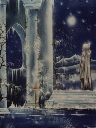

The Ice Queens PentaclePart 1 Once upon a time, In the land of snow covered mountains and forests and lakes, there stood proudly upon a frozen cloud a tall majestic palace. This palace was carved from flawless ice, its towers glistening in the rays of a fresh new dawn. Wild swans circled purposefully about the tallest tower; guarding it from the envious watchful eye of the one she was unaware she was soon to meet. Her name was Si, Queen absolute in her realm, at peace with the earth and the sky, nature adored her and blessed her with countless creatures and spirits to do her bidding, but despite this she wore a frown, betraying the mask of utter control and power that she had always exuded without a second thought. Turning to her two most trusted companions the Ice Queen let out a sigh, "I'm bored" she yelled. The ice faeries fluttered their wings, span countless somersaults and withdrew, fearing another use of the ice wand they had learnt to fear. Poor Snowflake had never really recovered from the last time his wings had been frozen solid and had fallen spiralling to the floor, magical wings shattering into myriads of little ice faerie shards. Life tending the snowdrops in the gardens was no real recompense. Bluebell whispered to Fifi "We must do something quick, dare we tell her the secret of the font in the chapel?" Fifi nodded, and the ice faeries began to reveal their darkest secret, the queen clapped her hands and exclaimed hungrily "Show me!" The magical words uttered, the still waters of the font swirled crazily, and her servants dancing nervously about her raven head she searched the cold waters for the one. The vision was curiously disappointing, a lonesome figure, half distant, his presence far from overbearing or noble greeted her in the waters, "is this the great secret you have taken me away from my musings to see?" Bluebell tittered, Fifi shrugged, the waters clouded, the spell was cast. The Queen spent the following days summoning assorted suitors to her chambers, abused their foolish greed for flesh, and laughed at them with a knowing wicked glance as they left. After the sun had set one cold lonely afternoon Si beckoned once more her ice faeries of choice "I will summon your so called one," she chortled to Bluebell, her secret favourite servant, "bring him to me!" she demanded. Bluebell curtseyed and sped out the arched window into the icy night and set off to cross the ocean of size. Fifi continued to weave ice flowers in her mistress's hair. Seven days passed before Bluebell returned. Exhausted she recounted her journey to foreign lands and the queen smiled, and blew her closest friend a kiss, almost causing a seizure in the violet blood that pumped through her faeries wings, causing her a less than graceful fall to the pillow, and into a long deserved sleep. "Fifi, bring me my crown, I am expecting company." Fifi obliged and rested the delicate snow crown upon her cruel mistress, with an unloved but eternally loyal bow of her head.
Once more the necromancer withdrew the picture from his waistcoat pocket, how it had arrived so mysteriously upon his person he still could not recall, sorcery more powerful than the high priestess that had trained him as a child he was sure. Cold ocean winds had frozen his locks on the long journey, his magik carpet of colour, a gift from his beloved colleague was caked in ice, its tassels erect with anticipation. With a smile the necromancer replaced the image of his quest reverently, as he willed his rug to commence its descent to the eerie cloud of ice below. The V formation of swans that had flown alongside him as he descended headed off towards the high tower, the leader entering via the gothic archway at its summit, the others circling menacingly, as the necromancer dismounted just before the great gate. A solitary mammoth awoke from its slumbers, its tusks piercing the misty air as it rose to its full height, letting out a deafening trumpeting cry, the crystalline gate shattered revealing a sapphire pathway to the palace. With a surprising air of calm the necromancer made his way forwards tipping his hat to the prehistoric beast as he passed, admiring the beauty of the well tended garden, full as it was with snowdrops as far as the eye could see. Bluebell and Fifi greeted him with excitement, ushering him through the twisty maze of passageways, ice caverns and spiral staircases to their queen's chamber. "He is a strange one indeed," questioned Fifi to her sister, "I hope our Queen will be pleased?" Bluebell just giggled and looked back watching her charge carefully in case he became lost as he constantly stopped to figure out how he would get out again, as if this were all a terrible mistake. They arrived at a curtain of icy water, a silver glyph depicting five crossed icicles in the shape of a pentacle shimmering upon it, imposing itself to all that had mortal eyes, the necromancer blood felt a sudden chill, the faeries muttered some unheard words, and the curtain was lifted. Fifi and Bluebell darted onwards to their queen, lying as she was upon the white silk sheets of her four-poster bed, hidden partially by the white muslin veil that cocooned it; a magnificent swan waddled gracefully out of the icy stream that meandered through this chamber, stalagmites of ice greeting the pearl laden ceiling with a teasing closeness.
Si had planned this first encounter with her prey with secret precision, nothing was to be left to chance, feigning emergence from a deep sleep she stretched her arms slowly with a yawn, sitting up she ushered her two companions to pass her snowflake robe, decorated with diamonds. She looked coyly at the necromancer standing silent with his hands covering his eyes, she let a sly grin escape from her blood red lips, corrupting this one will be so much fun she thought. Fully robed the Ice Queen motioned Fifi and Bluebell to part the veil as she stood, bare feet relishing the coldness of the icy floor. "Step forwards my sweets," she implored "Pray tell me, what is your name great necromancer," she commanded with a soft but determined voice. Bowing his head with gaze transfixed upon her eyes his shaky voice sputtered out "Zacharia from the land of Angles your royal ness, um, your royal highness" wishing his nerves would not have deserted him at this moment. "Well Zacharia from the land of Angles" she purred, "I am Si, Queen of the Ice" offering her hand she teased him "You may kiss your queen, my sweet, or have you forgotten how to treat a queen?" her eyes filled with wicked thoughts. Si's hands, as cold as the palace itself, felt a tingling of warmth as her necromancer's lips paid her homage. "So Zacharia from the land of Angles, I think I shall call you Zakk, no need for formality here, don't you agree?" her eyes scrutinising this eccentric looking necromancer from foreign lands, forbidding him to even utter a reply. "You must be weary and I'm sorry to say this, a little um aromatic after such a long journey, pray join me in my bath, it will revive you". Scanning the chamber quickly Zakk failed to spy anything that resembled a bath, Si saw his confusion and headed towards the marble steps that led into the ice cold waters of the meandering stream, raising the sides of her robe gently she stepped into the crystal clear waters. As she entered the stream the snowflakes that had been woven so tirelessly by her many servants began to melt, releasing showers of diamonds that curiously floated upon the surface of the water, swirling in harmony about her goddess form. Zakk blushing a crimson red removed his hat and began to stutter, seeing his bashfulness the queen winked to Bluebell secretly, and from atop the icy stalagmites a chorus of ice faeries descended circling the necromancer gently removing his garments while he stood in awe as the sunlight caught their tiny fluttering wings of crystalline violet. The willowy figure now dressed only in the two talismans that draped down over his collarbone and a silver and ruby ring on his right hand, his left clutching his hat to cover his modesty, dipped a toe into the swirling stream, the waters were cruelly cold to the touch. Fifi brought her mistress two of the sparkling vials that she had conjured one moon back in time, Si seeing the look of dread upon this necromancer, uncorked the vials placing a drop of the purple fluid and two of the red into the stream. The first potion transformed the clear waters filling them with smells of asphodels and poppies, the second reacted quickly with the water forming a thin layer of mist, a few inches high above the surface, which glowed a fiery orange. "There my sweet necromancer you may now join me, you'll find the waters a little more um comfortable now I think" a warm smile passing over her lips as she corked the vials and motioned Fifi to take them away. Zakk entered the stream; he sat, with a poise mirroring that of this goddess, cross-legged, arms relaxed by his side, the waters were indeed strangely warmed and comforting. "So my strange little necromancer," he certainly wasn't a Lancelot she thought as she rescued his hat from the swirling mists, "Tell me of your land and its many secrets" she smiled splashing water about her heaving bosoms that where being gently buffeted by the swirling current, diamonds falling casually as teasing portions of her robe melted away. "Well, um, there is quite a furore right now in my land, all to do with renaming it from the land of Angles to Angle land," he piped up nervously scratching his eyebrow in a frantic attempt to find something magical to say."And why do they call it the land of Angles anyway?" the queen chuckled, splashing more water about her now very exposed breasts. "Hmm good question, I think mainly it is because the coast there is well, sorta, um very angled your majesty" his eyes not really knowing where to look. Si giggled at the necromancer's futile attempt to avoid gazing at her beauty. Zakk continued to tell this queen of his land, its meadows, its pleasant hills of green, the willows, windmills, and faeries of many colours that lived in the wood near his thatched cottage. Si clapped her hands at the story of the faeries of red and green purple and orange, how completely mad this necromancer was to mistake the colour of faeries, she indulged his fantasy but quietly doubted this necromancer always told the truth."Shoosh my sweets" she whispered, "I have a secret to share with you." with a clap of her hands Laurence king of the swans paddled downstream, only to return minutes later a silver chain in its beak, pulling behind him an ornate miniature ice palace, Laurence handed the chain to his queen and paddled away. At the end of the silver chain was a silver key, the Ice Queen inserted the key into the invisible lock, an audible crisp click broke the eerie silence, Si's eyes were ablaze. "What is it?" the necromancer enquired, its my secret pentacle Si smiled, she slowly turned the palace in the water to reveal the five shards of ice that carefully rested on the purple velvet interior forming a perfect pentacle. "Choose one," the queen implored with a cackle. To be continued ... ... click here to return to the front page.
| ||||||